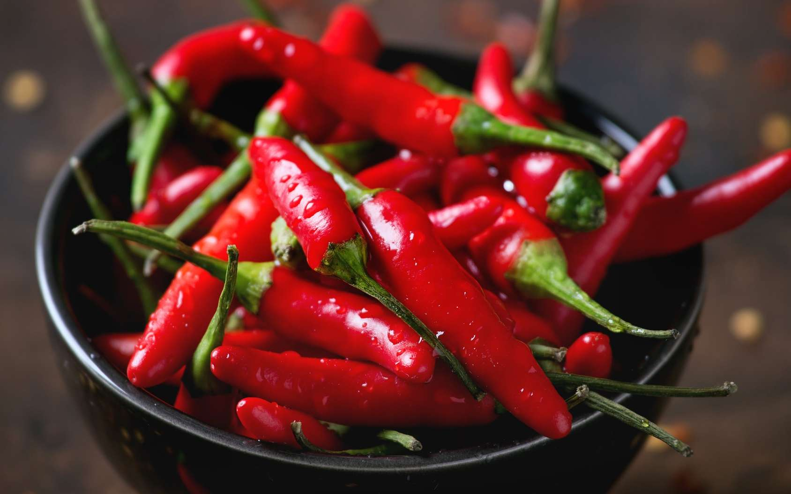

Par ailleurs, la guyane possède ses propres plats, d'origine businenge (peuples descendant des premiers esclaves) pour la plupart, ils sont en grande partie commun avec les autres colonies européennes proche, comme le Suriname ou les antilles, connu comme la gastronomie Créole. On y retrouve toute sorte de plat à base de viande ou gibier local accompagné de riz et de haricots.
La guyane est principalement connue pour le fameux piment de Cayenne. Ce qui est moins connu c’est qu’il existe deux type de piments dit “de Cayenne” : L’un fort comme du Tabasco (jusqu’à 50 000 sur l’échelle de Scoville*) et l’autre doux comme du paprika (2 500 à 5 000 sur cette même échelle). Le second est à tort nommé ainsi car il vient en réalité d’amérique centrale (entre la Colombie et le Mexique).

Cependant, la région possède son propre plat régional : le bouillon d'awara. Il est composé de divers viande, salaison et légume et se prépare la veille. Chaque année, un grand concour vise à récompenser le meilleur bouillon.